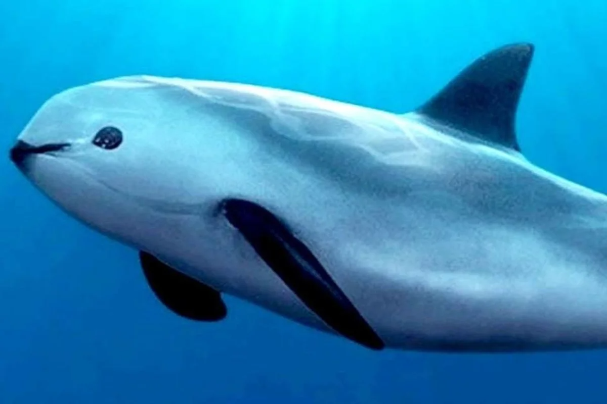

The world's animal species are endangered due to the city's developments, deforestation, habitat disappearance, lower food to consume, and climate changes. Endangered species are nearly extinct in near future.
Many factors are considered when evaluating a specie status such as number remaining, increase or decrease population, breeding success rates, and threats for them. Over 50% of species are endangered and at risk of extinction. Countries and governments across the world need to take action and protect wild animals. 195 countries signed in to create
Conservation status
Conservation status is designed by International Union for Conversation of Nature(IUCN) to indicate whether species are extinct or their status of going to extinct. The IUCN Red List of Threatened Species is one of the best well-known ranking list systems and is classified into 9 groups. These are the six levels that show species are extinct, endangered, and threatened. Read More from IUCN
| Condition |
Conservation Status |
Details |
| Extinct |
Extinct (EX) |
No living individuals |
| Extinct |
Extinct in the Wild (EW) |
No living in the wild, only living in captivity |
| Threatened |
Critically endangered (CR) |
Almost extinct |
| Threatened |
Endangered (EN) |
Higher risk of extinction |
| Threatened |
Vulnerable (VU) |
High risk of extinction |
| Lower risk |
Near Threated (NT) |
Likely to become endangered in the near future |
What is the most endangered animal?
There are nearly 20 animals that are almost going to extinct. Among them, the most endangered animal is considered to be the vaquita, which is considered the world's rarest sea mammal. The specie has only 10 Vaquita left and lives only in. What leads to this specie being almost extinct? Because of over-fishing, Vaquitas are facing extinction. The large weighted nets, known as gillnets cause them face with existential threat and become the most endangered mammal.

Vaquita
- Specie name: Vaquita
- Habitats : Mexico Gulf of California
- Threats : over-fishing
- Population : 10 left
- Conservation Status : CR
Endangered Species List
Ranked by Conservation Status (sort by: top risk)
Black Softshell Turtle

- Specie name: Black Softshell Turtle
- Habitats : India and Bangladesh
- Threats : deforestation
- Population : 44 left
- Conservation Status : EW
South China Tiger

- Specie name: South China Tiger
- Habitats : tropical rain forests from southern China
- Threats : deforestation, poaching
- Population : less than 50 left
- Conservation Status : EW
Spix's Macaw

- Specie name: Spix's Macaw
- Habitats : Brazil in the interior and northeast
- Threats : deforestation, poaching
- Population : 58 left
- Conservation Status : EW
Javan Rhino

- Specie name: Javan Rhino
- Habitats : Ujung Kulon National Park in Java, Indonesia
- Threats : poaching
- Population : 68 left
- Conservation Status : CR
Sumatran Rhino

- Specie name: Sumatran Rhino
- Habitats : lowland swamps to montane forests
- Threats : deforestation, poaching
- Population : 85 left
- Conservation Status : CR
Amur Leopard

- Specie name: Amur Leopard
- Habitats : Amur Heilong Landscape both in Russian & China
- Threats : Deforestation, Poaching
- Population : 84 left
- Conservation Status : EN
Irrawaddy Dolphin

- Specie name: Irrawaddy Dolphin
- Habitats : River Ayeyarwady, the Mahakam, the Mekong
- Threats : overfishing, deforestation, poaching
- Population : 92 left
- Conservation Status : EN
Socorro Dove

- Specie name: Socorro Dove
- Habitats : Socorro Island in the Revillagigedo Islands on the west coast of Mexico
- Threats : invasive species introduction
- Population : less than 100 left
- Conservation Status : EW
Hawaiian Crow

- Specie name: Hawaiian Crow
- Habitats : Metrosideros collina or mixed ohia & koa forests
- Threats : invasive species introduction
- Population : 114 left
- Conservation Status : EW
Red Fox

- Specie name: Red Fox
- Habitats : forests, grasslands, mountains, and deserts
- Threats : deforestation
- Population : 240 left
- Conservation Status : CR
Malayan Tigers

- Specie name: Malayan Tigers
- Habitats : tropical forests from Malaysia
- Threats : deforestation, poaching
- Population : 250 - 340 left
- Conservation Status : CR
Cross River Gorilla

- Specie name: Cross River Gorilla
- Habitats : lowland montane forests and rainforests of Cameroon and Nigeria
- Threats : deforestation, poaching
- Population : 350 left
- Conservation Status : CR
Indochinese Tigers

- Specie name: Indochinese Tigers
- Habitats : tropical rainforests from Cambodia, Laos, Thailand, Vietnam, Myanmar
- Threats : deforestation, poaching
- Population : 350 left
- Conservation Status : EN
Black-footed Ferret

- Specie name: Black-footed Ferret
- Habitats : short or middle grass prairies in Americas
- Threats : deforestation
- Population : 370 left
- Conservation Status : EN
North Atlantic Right Whale

- Specie name: North Atlantic Right Whale
- Habitats : Atlantic coastal waters on the continental shelf
- Threats : over-fishing, climate change
- Population : 300 - 350 left
- Conservation Status : EN
Asiatic Lion

- Specie name: Asiatic Lion
- Habitats : The Gir Forest in Gujarat (India)
- Threats : deforestation, poaching
- Population : 750 left
- Conservation Status : EN
Borneo Pygmy Elephants

- Specie name: Borneo Pygmy Elephants
- Habitats : forests of northeastern Borneo, Malaysia, and Indonesia
- Threats : deforestation
- Population : 1500 left
- Conservation Status : EN
Giant Panda

- Specie name: Giant Panda
- Habitats : bamboo forests in China
- Threats : deforestation
- Population : 1864 left
- Conservation Status : VU
To summarize, most animals are threatened by deforestation and poaching by humans. Species that are shown in this list are left only around tens and hundreds. Moreover, these species are top endangered species and there have thousands of species left that are not shown on the list.
You can read more at:
www.worldwildlife.org